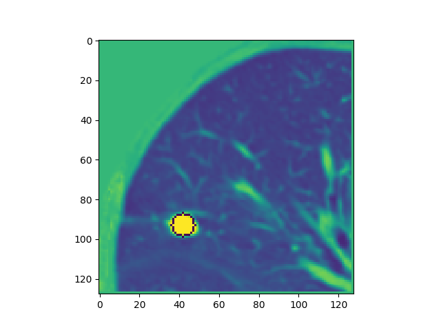
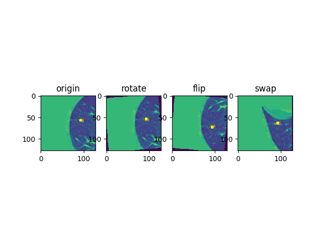

经过上一篇blog的介绍，我们只是从原始的mhd数据进行ROI处理，并统一分辨率。
经过这样一系列的操作，我们得到的是每个病例不同大小的数据，而且数据集很小（1800+个结节）。
如果为我们的3DCNN准备数据集，并构建网络进行训练是本文将要展开的事情。
这部分的内容主要是：准备数据集、装载数据、搭建网络并开始训练。1
2
3
4
5
6
7
8
9
10margin = 32
sidelen = 144
config1['datadir'] = prep_result_path
split_comber = SplitComb(sidelen,config1['max_stride'],config1['stride'],margin,pad_value= config1['pad_value'])
dataset = DataBowl3Detector(testsplit,config1,phase='test',split_comber=split_comber)
test_loader = DataLoader(dataset,batch_size = 1,
shuffle = False,num_workers = 32,pin_memory=False,collate_fn =collate)
test_detect(test_loader, nod_net, get_pbb, bbox_result_path,config1,n_gpu=config_submit['n_gpu'])
准备数据集
SplitComb是一个类，类的主要参数有：side_len=144, max_stride=16, stride=4, margin=32, pad_value=1701
2
3
4
5
6
7class SplitComb():
def __init__(self,side_len,max_stride,stride,margin,pad_value):
self.side_len = side_len
self.max_stride = max_stride
self.stride = stride
self.margin = margin
self.pad_value = pad_value
DataBowl3Detector是继承torch的一个类Dataset。关于torch的教程，可以参考这里。在DataBowl3Detector中定义好我们自己的数据集，就可以通过torch的DataLoader来进行数据的加载。需要注意的是，从raw_data中采样的时候，为了提高直径比较大的结节的准确率，在生成数据集的时候，源代码是将小于等于6mm的结节去掉，然后将大于6mm的结节采样，大于30mm的采样率是3倍，大于40mm的采样率是7倍。我们在对数据预处理的时候对luna16这个数据集进行统计，我们发现……，因此我们调整这个采样率为……。1
2
3
4
5
6
7
8
9
10
11
12
13
14
15
16
17
18
19
20
21
22
23
24
25
26
27
28
29
30
31
32
33
34
35
36
37
38class DataBowl3Detector(Dataset):
def __init__(self, split, config, phase = 'train',split_comber=None):
assert(phase == 'train' or phase == 'val' or phase == 'test')
self.phase = phase
self.max_stride = config['max_stride']
self.stride = config['stride']
sizelim = config['sizelim']/config['reso']
sizelim2 = config['sizelim2']/config['reso']
sizelim3 = config['sizelim3']/config['reso']
self.blacklist = config['blacklist']
self.isScale = config['aug_scale']
self.r_rand = config['r_rand_crop']
self.augtype = config['augtype']
data_dir = config['datadir']
self.pad_value = config['pad_value']
self.split_comber = split_comber
self.filenames = split
labels = []
for idx in split:
l = np.load(open(idx.replace('cut', 'label'), 'rb'))
labels.append(l)
self.sample_bboxes = labels
if self.phase!='test':
self.bboxes = []
for i, l in enumerate(labels):
if len(l.shape) > 1:
for t in l: # z, x, y, c
if t[3]>sizelim:
self.bboxes.append([np.concatenate([[i],t])])
if t[3]>sizelim2:
self.bboxes+=[[np.concatenate([[i],t])]]*2
if t[3]>sizelim3:
self.bboxes+=[[np.concatenate([[i],t])]]*4
self.bboxes = np.concatenate(self.bboxes,axis = 0)
self.crop = Crop(config)
self.label_mapping = LabelMapping(config, self.phase)
在上面这段代码中，我们注意到有两个类：Crop和LabelMapping。1
2
3
4
5
6class Crop(object):
def __init__(self, config):
self.crop_size = config['crop_size']
self.bound_size = config['bound_size']
self.stride = config['stride']
self.pad_value = config['pad_value']
1 |
|
在pytorch中，继承DataSet的子类，都需要重写__len__()函数和__getitem__()函数.
前者是为了支持对数据集大小的查询,后者是为了支持索引.
由于在训练的过程中，数据集中的70%是包含有结节的部分,也就是ground truth的长度,而另外30%是从空白地方截取出来的,因此整个数据集的大小就是len(self.bboxes)/(1-self.r_rand).1
2
3
4
5
6
7
8class DataBowl3Detector(Dataset):
def __len__(self):
if self.phase == 'train':
return len(self.bboxes)/(1-self.r_rand)
elif self.phase =='val':
return len(self.bboxes)
else:
return len(self.filenames)
对数据的处理分为训练阶段和测试阶段(这里对索引bboxes长度的就是30%的空白patch)
在训练阶段,在__getitem__()方法中,在返回结果要对数据进行crop操作和augment操作.
而对应的label也要随着图像的变换做相应的变换.1
2
3
4
5
6
7
8
9
10
11
12
13
14
15
16
17
18
19
20
21
22
23
24
25
26
27
28
29
30
31
32
33
34
35
36
37
38
39
40
41class DataBowl3Detector(Dataset):
def __getitem__(self, idx, split=None):
t = time.time()
np.random.seed(int(str(t%1)[2:7]))#seed according to time
isRandomImg = False
if self.phase != 'test':
if idx>=len(self.bboxes):
isRandom = True
idx = idx%len(self.bboxes)
isRandomImg = np.random.randint(2)
else:
isRandom = False
else:
isRandom = False
if self.phase != 'test':
if not isRandomImg:
bbox = self.bboxes[idx]
filename = self.filenames[int(bbox[0])]
imgs = np.load(filename)[0]
bboxes = self.sample_bboxes[int(bbox[0])]
isScale = self.augtype['scale'] and (self.phase=='train')
sample, target, bboxes, coord = self.crop(imgs, bbox[1:], bboxes,isScale,isRandom)
if self.phase=='train' and not isRandom:
sample, target, bboxes, coord = augment(sample, target, bboxes, coord,
ifflip = self.augtype['flip'], ifrotate=self.augtype['rotate'], ifswap = self.augtype['swap'])
else:
randimid = np.random.randint(len(self.filenames))
filename = self.filenames[randimid]
imgs = np.load(filename)[0]
bboxes = self.sample_bboxes[randimid]
isScale = self.augtype['scale'] and (self.phase=='train')
sample, target, bboxes, coord = self.crop(imgs, [], bboxes,isScale=False,isRand=True)
label = self.label_mapping(sample.shape[1:], target, bboxes)
sample = sample.astype(np.float32)
sample = (sample.astype(np.float32)-128)/128
return torch.from_numpy(sample), torch.from_numpy(label), coord
assert np.all(nzhw==nzhw2)
imgs = (imgs.astype(np.float32)-128)/128
return torch.from_numpy(imgs.astype(np.float32)), bboxes, torch.from_numpy(coord2.astype(np.float32)), np.array(nzhw)
裁剪数据
target表示的是当前索引的结节的位置信息,bboxes表示的是当前索引的图像的所有的结节位置信息.
scaleRange是计算出的一个将图像随机缩放的一个区间.
在预处理部分将数据统一到一个物理分辨率上,但在训练网络的时候,为了增强数据,又将数据在[0.75, 1.25]的范围内进行缩放处理.
如果不需要缩放,则图像直接用默认的[128, 128, 128]进行裁剪.如果需要缩放,则计算出对应的缩放率和对应的缩放大小,先进行裁剪,再在最后一步裁剪到统一的[128, 128, 128].1
2
3
4
5
6
7
8
9
10
11
12
13
14class Crop():
def __call__(self, imgs, target, bboxes,isScale=False,isRand=False):
if isScale:
radiusLim = [8.,100.]
scaleLim = [0.75,1.25]
scaleRange = [np.min([np.max([(radiusLim[0]/target[3]),scaleLim[0]]),1])
,np.max([np.min([(radiusLim[1]/target[3]),scaleLim[1]]),1])]
scale = np.random.rand()*(scaleRange[1]-scaleRange[0])+scaleRange[0]
crop_size = (np.array(self.crop_size).astype('float')/scale).astype('int')
else:
crop_size=self.crop_size
bound_size = self.bound_size
target = np.copy(target)
bboxes = np.copy(bboxes)
裁剪patch的时候不要求结节在patch的正中心,而是满足与边界的margin大于12pixels的任意区域中.(除非结节太大了).1
2
3
4
5
6
7
8
9
10
11
12
13
14
15
16
17
18
19
20
21
22
23
24
25
26
27
28
29
30
31
32
33
34
35
36
37
38
39
40
41
42
43
44
45
46
47
48
49
50
51
52
53
54start = []
for i in range(3):
if not isRand:
r = target[3] / 2
s = np.floor(target[i] - r)+ 1 - bound_size
e = np.ceil (target[i] + r)+ 1 + bound_size - crop_size[i]
else:
s = np.max([imgs.shape[i+1]-crop_size[i]/2,imgs.shape[i+1]/2+bound_size])
e = np.min([crop_size[i]/2, imgs.shape[i+1]/2-bound_size])
target = np.array([np.nan,np.nan,np.nan,np.nan])
if s>e:
start.append(np.random.randint(e,s))#!
else:
start.append(int(target[i])-crop_size[i]/2+np.random.randint(-bound_size/2,bound_size/2))
normstart = np.array(start).astype('float32')/np.array(imgs.shape[1:])-0.5
normsize = np.array(crop_size).astype('float32')/np.array(imgs.shape[1:])
xx,yy,zz = np.meshgrid(np.linspace(normstart[0],normstart[0]+normsize[0],self.crop_size[0]/self.stride),
np.linspace(normstart[1],normstart[1]+normsize[1],self.crop_size[1]/self.stride),
np.linspace(normstart[2],normstart[2]+normsize[2],self.crop_size[2]/self.stride),indexing ='ij')
coord = np.concatenate([xx[np.newaxis,...], yy[np.newaxis,...],zz[np.newaxis,:]],0).astype('float32')
pad = []
pad.append([0,0])
for i in range(3):
leftpad = max(0,-start[i])
rightpad = max(0,start[i]+crop_size[i]-imgs.shape[i+1])
pad.append([leftpad,rightpad])
crop = imgs[:,
max(start[0],0):min(start[0] + crop_size[0],imgs.shape[1]),
max(start[1],0):min(start[1] + crop_size[1],imgs.shape[2]),
max(start[2],0):min(start[2] + crop_size[2],imgs.shape[3])]
crop = np.pad(crop,pad,'constant',constant_values =self.pad_value)
for i in range(3):
target[i] = target[i] - start[i]
for i in range(len(bboxes)):
for j in range(3):
bboxes[i][j] = bboxes[i][j] - start[j]
if isScale:
with warnings.catch_warnings():
warnings.simplefilter("ignore")
crop = zoom(crop,[1,scale,scale,scale],order=1)
newpad = self.crop_size[0]-crop.shape[1:][0]
if newpad<0:
crop = crop[:,:-newpad,:-newpad,:-newpad]
elif newpad>0:
pad2 = [[0,0],[0,newpad],[0,newpad],[0,newpad]]
crop = np.pad(crop,pad2,'constant',constant_values =self.pad_value)
for i in range(4):
target[i] = target[i]*scale
for i in range(len(bboxes)):
for j in range(4):
bboxes[i][j] = bboxes[i][j]*scale
return crop, target, bboxes, coord
在这里,crop是[1, 128, 128, 128]的图像,target是当前索引的位置信息,bboxes是当前图像的位置信息.
如下图就是裁剪之后的[128, 128]的一个结果:

数据增强
这部分数据增强的操作主要有:旋转,翻转,以及x,y,z坐标轴的调换.paper中说再多的操作对效果提升没有显著的帮助,因此只使用了翻转.1
2
3
4
5
6
7
8
9
10
11
12
13
14
15
16
17
18
19
20
21
22
23
24
25
26
27
28
29
30
31
32
33
34
35
36
37
38def augment(sample, target, bboxes, coord, ifflip = True, ifrotate=True, ifswap = True):
if ifrotate:
validrot = False
counter = 0
while not validrot:
newtarget = np.copy(target)
angle1 = (np.random.rand()-0.5)*20
size = np.array(sample.shape[2:4]).astype('float')
rotmat = np.array([[np.cos(angle1/180*np.pi),-np.sin(angle1/180*np.pi)],[np.sin(angle1/180*np.pi),np.cos(angle1/180*np.pi)]])
newtarget[1:3] = np.dot(rotmat,target[1:3]-size/2)+size/2
if np.all(newtarget[:3]>target[3]) and np.all(newtarget[:3]< np.array(sample.shape[1:4])-newtarget[3]):
validrot = True
target = newtarget
sample = rotate(sample,angle1,axes=(2,3),reshape=False)
coord = rotate(coord,angle1,axes=(2,3),reshape=False)
for box in bboxes:
box[1:3] = np.dot(rotmat,box[1:3]-size/2)+size/2
else:
counter += 1
if counter ==3:
break
if ifflip:
# flipid = np.array([np.random.randint(2),np.random.randint(2),np.random.randint(2)])*2-1
flipid = np.array([1,np.random.randint(2),np.random.randint(2)])*2-1
sample = np.ascontiguousarray(sample[:,::flipid[0],::flipid[1],::flipid[2]])
coord = np.ascontiguousarray(coord[:,::flipid[0],::flipid[1],::flipid[2]])
for ax in range(3):
if flipid[ax]==-1:
target[ax] = np.array(sample.shape[ax+1])-target[ax]
bboxes[:,ax]= np.array(sample.shape[ax+1])-bboxes[:,ax]
if ifswap:
if sample.shape[1]==sample.shape[2] and sample.shape[1]==sample.shape[3]:
axisorder = np.random.permutation(3)
sample = np.transpose(sample,np.concatenate([[0],axisorder+1]))
coord = np.transpose(coord,np.concatenate([[0],axisorder+1]))
target[:3] = target[:3][axisorder]
bboxes[:,:3] = bboxes[:,:3][:,axisorder]
return sample, target, bboxes, coord
处理的效果如下图所示:

正负样本平衡
label mapping实现的是一种online hard negative mining的技术.目的是为了改善数据集中正负样本比例不均衡的问题.1
2
3
4
5
6
7
8
9
10
11
12
13
14
15
16
17
18
19
20
21
22
23
24
25
26
27
28
29
30
31
32
33
34
35
36
37
38
39
40
41
42
43
44
45
46
47
48
49
50
51
52
53
54
55
56
57
58
59
60
61
62
63
64class LabelMapping(object):
def __call__(self, input_size, target, bboxes):
stride = self.stride
num_neg = self.num_neg
th_neg = self.th_neg
anchors = self.anchors
th_pos = self.th_pos
struct = generate_binary_structure(3,1)
output_size = []
for i in range(3):
assert(input_size[i] % stride == 0)
output_size.append(input_size[i] / stride)
label = np.zeros(output_size + [len(anchors), 5], np.float32)
offset = ((stride.astype('float')) - 1) / 2
oz = np.arange(offset, offset + stride * (output_size[0] - 1) + 1, stride)
oh = np.arange(offset, offset + stride * (output_size[1] - 1) + 1, stride)
ow = np.arange(offset, offset + stride * (output_size[2] - 1) + 1, stride)
for bbox in bboxes:
for i, anchor in enumerate(anchors):
iz, ih, iw = select_samples(bbox, anchor, th_neg, oz, oh, ow)
label[iz, ih, iw, i, 0] = 1
label[:,:,:, i, 0] = binary_dilation(label[:,:,:, i, 0].astype('bool'),structure=struct,iterations=1).astype('float32')
label = label-1
if self.phase == 'train' and self.num_neg > 0:
neg_z, neg_h, neg_w, neg_a = np.where(label[:, :, :, :, 0] == -1)
neg_idcs = random.sample(range(len(neg_z)), min(num_neg, len(neg_z)))
neg_z, neg_h, neg_w, neg_a = neg_z[neg_idcs], neg_h[neg_idcs], neg_w[neg_idcs], neg_a[neg_idcs]
label[:, :, :, :, 0] = 0
label[neg_z, neg_h, neg_w, neg_a, 0] = -1
if np.isnan(target[0]):
return label
iz, ih, iw, ia = [], [], [], []
for i, anchor in enumerate(anchors):
iiz, iih, iiw = select_samples(target, anchor, th_pos, oz, oh, ow)
iz.append(iiz)
ih.append(iih)
iw.append(iiw)
ia.append(i * np.ones((len(iiz),), np.int64))
iz = np.concatenate(iz, 0)
ih = np.concatenate(ih, 0)
iw = np.concatenate(iw, 0)
ia = np.concatenate(ia, 0)
flag = True
if len(iz) == 0:
pos = []
for i in range(3):
pos.append(max(0, int(np.round((target[i] - offset) / stride))))
idx = np.argmin(np.abs(np.log(target[3] / anchors)))
pos.append(idx)
flag = False
else:
idx = random.sample(range(len(iz)), 1)[0]
pos = [iz[idx], ih[idx], iw[idx], ia[idx]]
dz = (target[0] - oz[pos[0]]) / anchors[pos[3]]
dh = (target[1] - oh[pos[1]]) / anchors[pos[3]]
dw = (target[2] - ow[pos[2]]) / anchors[pos[3]]
dd = np.log(target[3] / anchors[pos[3]])
label[pos[0], pos[1], pos[2], pos[3], :] = [1, dz, dh, dw, dd]
return label
label mapping的实现方法具体是通过将当前loss下难以筛选辨识的false positive加入到训练数据中.1
2
3
4
5
6
7
8
9
10
11
12
13
14
15
16
17
18
19
20
21
22
23
24
25
26
27
28
29
30
31
32
33
34
35
36
37
38
39
40
41
42
43
44
45
46
47
48
49
50
51
52def select_samples(bbox, anchor, th, oz, oh, ow):
z, h, w, d = bbox
max_overlap = min(d, anchor)
min_overlap = np.power(max(d, anchor), 3) * th / max_overlap / max_overlap
if min_overlap > max_overlap:
return np.zeros((0,), np.int64), np.zeros((0,), np.int64), np.zeros((0,), np.int64)
else:
s = z - 0.5 * np.abs(d - anchor) - (max_overlap - min_overlap)
e = z + 0.5 * np.abs(d - anchor) + (max_overlap - min_overlap)
mz = np.logical_and(oz >= s, oz <= e)
iz = np.where(mz)[0]
s = h - 0.5 * np.abs(d - anchor) - (max_overlap - min_overlap)
e = h + 0.5 * np.abs(d - anchor) + (max_overlap - min_overlap)
mh = np.logical_and(oh >= s, oh <= e)
ih = np.where(mh)[0]
s = w - 0.5 * np.abs(d - anchor) - (max_overlap - min_overlap)
e = w + 0.5 * np.abs(d - anchor) + (max_overlap - min_overlap)
mw = np.logical_and(ow >= s, ow <= e)
iw = np.where(mw)[0]
if len(iz) == 0 or len(ih) == 0 or len(iw) == 0:
return np.zeros((0,), np.int64), np.zeros((0,), np.int64), np.zeros((0,), np.int64)
lz, lh, lw = len(iz), len(ih), len(iw)
iz = iz.reshape((-1, 1, 1))
ih = ih.reshape((1, -1, 1))
iw = iw.reshape((1, 1, -1))
iz = np.tile(iz, (1, lh, lw)).reshape((-1))
ih = np.tile(ih, (lz, 1, lw)).reshape((-1))
iw = np.tile(iw, (lz, lh, 1)).reshape((-1))
centers = np.concatenate([
oz[iz].reshape((-1, 1)),
oh[ih].reshape((-1, 1)),
ow[iw].reshape((-1, 1))], axis = 1)
r0 = anchor / 2
s0 = centers - r0
e0 = centers + r0
r1 = d / 2
s1 = bbox[:3] - r1
s1 = s1.reshape((1, -1))
e1 = bbox[:3] + r1
e1 = e1.reshape((1, -1))
overlap = np.maximum(0, np.minimum(e0, e1) - np.maximum(s0, s1))
intersection = overlap[:, 0] * overlap[:, 1] * overlap[:, 2]
union = anchor * anchor * anchor + d * d * d - intersection
iou = intersection / union
mask = iou >= th
iz = iz[mask]
ih = ih[mask]
iw = iw[mask]
return iz, ih, iw
当处于测试阶段时,DataBowl3Detector需要将原数据进行切割.1
2
3
4
5
6
7
8
9
10
11
12
13
14
15
16imgs = np.load(self.filenames[idx])
bboxes = self.sample_bboxes[idx]
nz, nh, nw = imgs.shape[1:]
pz = int(np.ceil(float(nz) / self.stride)) * self.stride
ph = int(np.ceil(float(nh) / self.stride)) * self.stride
pw = int(np.ceil(float(nw) / self.stride)) * self.stride
imgs = np.pad(imgs, [[0,0],[0, pz - nz], [0, ph - nh], [0, pw - nw]], 'constant',constant_values = self.pad_value)
xx,yy,zz = np.meshgrid(np.linspace(-0.5,0.5,imgs.shape[1]/self.stride),
np.linspace(-0.5,0.5,imgs.shape[2]/self.stride),
np.linspace(-0.5,0.5,imgs.shape[3]/self.stride),indexing ='ij')
coord = np.concatenate([xx[np.newaxis,...], yy[np.newaxis,...],zz[np.newaxis,:]],0).astype('float32')
imgs, nzhw = self.split_comber.split(imgs)
coord2, nzhw2 = self.split_comber.split(coord,
side_len = self.split_comber.side_len/self.stride,
max_stride = self.split_comber.max_stride/self.stride,
margin = self.split_comber.margin/self.stride)
SplitComb类主要有两个函数。split操作对数据进行padding，以及z\x\y轴上的处理。1
2
3
4
5
6
7
8
9
10
11
12
13
14
15
16
17
18
19
20
21
22
23
24
25
26
27
28
29
30
31
32
33
34
35
36
37class SplitComb():
def split(self, data, side_len = None, max_stride = None, margin = None):
if side_len==None:
side_len = self.side_len
if max_stride == None:
max_stride = self.max_stride
if margin == None:
margin = self.margin
assert(side_len > margin)
assert(side_len % max_stride == 0)
assert(margin % max_stride == 0)
splits = []
_, z, h, w = data.shape
nz = int(np.ceil(float(z) / side_len))
nh = int(np.ceil(float(h) / side_len))
nw = int(np.ceil(float(w) / side_len))
nzhw = [nz,nh,nw]
self.nzhw = nzhw
pad = [ [0, 0],
[margin, nz * side_len - z + margin],
[margin, nh * side_len - h + margin],
[margin, nw * side_len - w + margin]]
data = np.pad(data, pad, 'edge')
for iz in range(nz):
for ih in range(nh):
for iw in range(nw):
sz = iz * side_len
ez = (iz + 1) * side_len + 2 * margin
sh = ih * side_len
eh = (ih + 1) * side_len + 2 * margin
sw = iw * side_len
ew = (iw + 1) * side_len + 2 * margin
split = data[np.newaxis, :, sz:ez, sh:eh, sw:ew]
splits.append(split)
splits = np.concatenate(splits, 0)
return splits,nzhw
切割结束后,需要结合所有的patch计算出最终的预测结果.1
2
3
4
5
6
7
8
9
10
11
12
13
14
15
16
17
18
19
20
21
22
23
24
25
26
27
28
29
30
31
32
33
34
35
36
37
38
39
40
41
42def combine(self, output, nzhw = None, side_len=None, stride=None, margin=None):
if side_len==None:
side_len = self.side_len
if stride == None:
stride = self.stride
if margin == None:
margin = self.margin
if nzhw is None:
nz = self.nz
nh = self.nh
nw = self.nw
else:
nz,nh,nw = nzhw
assert(side_len % stride == 0)
assert(margin % stride == 0)
side_len /= stride
margin /= stride
splits = []
for i in range(len(output)):
splits.append(output[i])
output = -1000000 * np.ones((
nz * side_len,
nh * side_len,
nw * side_len,
splits[0].shape[3],
splits[0].shape[4]), np.float32)
idx = 0
for iz in range(nz):
for ih in range(nh):
for iw in range(nw):
sz = iz * side_len
ez = (iz + 1) * side_len
sh = ih * side_len
eh = (ih + 1) * side_len
sw = iw * side_len
ew = (iw + 1) * side_len
split = splits[idx][margin:margin + side_len, margin:margin + side_len, margin:margin + side_len]
output[sz:ez, sh:eh, sw:ew] = split
idx += 1
return output